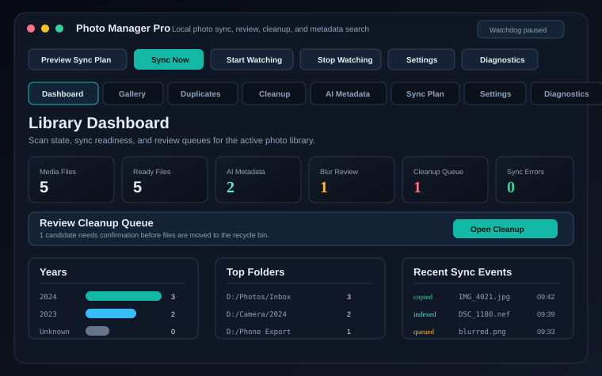
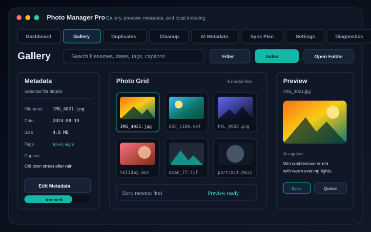
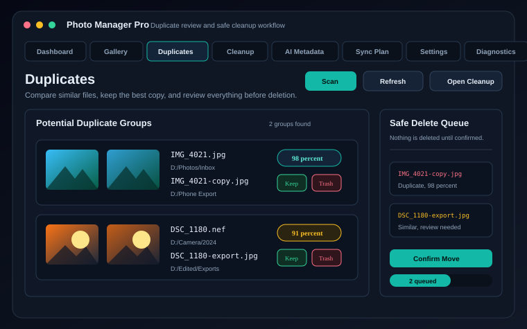

Sort incoming media
Copy photos and videos into year folders using EXIF, filename dates, and timestamp fallbacks.
Local-first photo management for Windows and Linux
A polished desktop dashboard for local photo sync, library indexing, duplicate review, cleanup queues, AI metadata, cloud transfer planning, and phone imports.
What it does
Copy photos and videos into year folders using EXIF, filename dates, and timestamp fallbacks.
Stores file metadata, sync events, blur scores, captions, tags, and review decisions in SQLite.
Queues duplicates and low-quality candidates before moving files to the recycle bin.
Watch folders through the GUI, Windows Services, or Linux systemd user services.
Generate lightweight local tags/captions and search metadata without leaving the app.
Authenticate with OAuth, preview upload/download plans, and run guarded Drive transfers.
Start the LAN receiver, pair with a code, and sort uploaded phone media into the desktop library.
Inspect operational logs, export reports, and keep sync failures visible instead of hidden.
Workflow
Confirm the library root, source folder, Phone Inbox, and optional mounted/cloud locations.
Review what will be copied before running a sync or sorting phone uploads.
Build the SQLite index so Dashboard, Gallery, duplicates, blur review, and AI metadata stay fast.
Queue cleanup decisions, export reports, and only delete after an explicit review step.
Screenshots

dashboard.svg
gallery.svg
duplicates.svgDownload
GitHub Releases provide the Windows executable. Linux and source users can install the Python package and run the same GUI or headless service commands.
PhotoManagerPro.exe
python -m pip install photosync-tool
photo-manager-pro
photo-manager-service install
Roadmap
More clean-machine checks for the Windows executable, installer, and service modes.
Find missing, moved, changed, zero-byte, and duplicate-indexed files before repair actions.
Preview, copy, verify, and report imports from phones, camera cards, and staging folders.
Save filtered library views based on years, folders, file types, tags, blur scores, and review state.